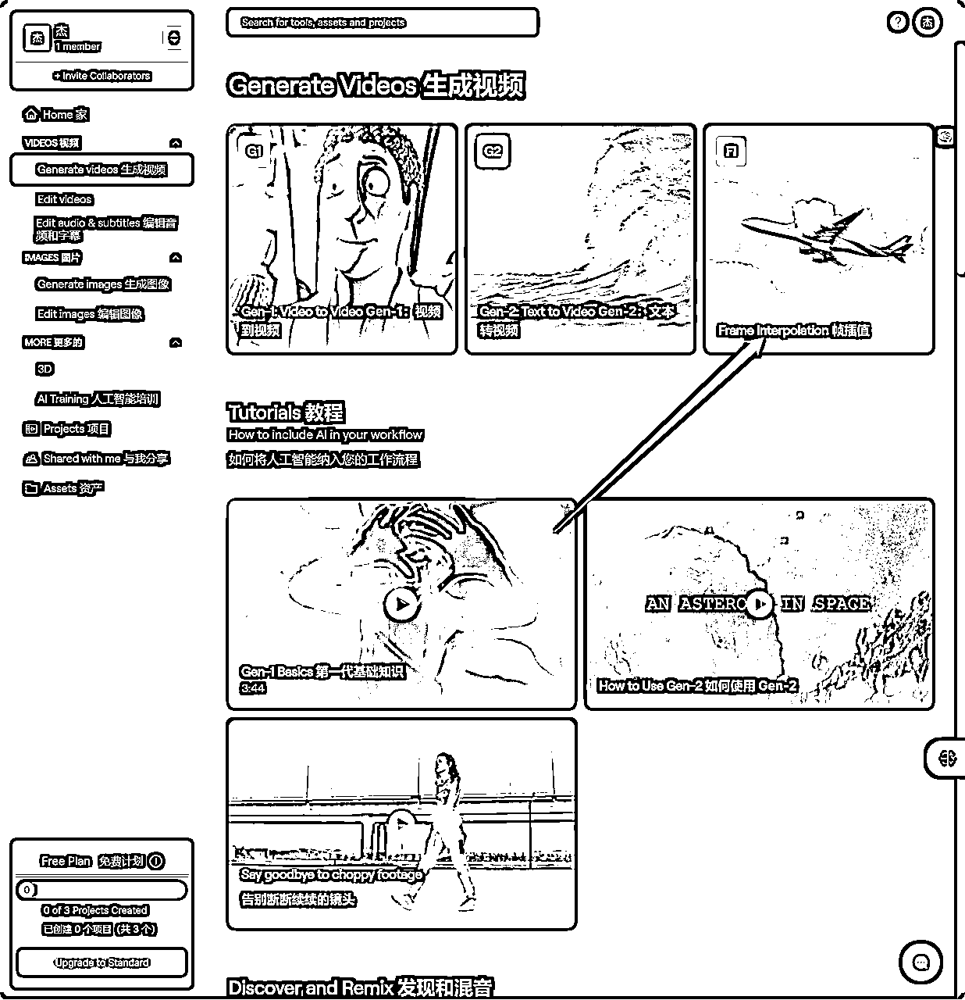

来源：https://ycgc2f717o.feishu.cn/docx/B2R3dj6SwoOdCrxLwLOcHQuDnRd
MJ更新了最新的5.2版本，最大的亮点是在Zoom Out（缩放）功能。延伸出了很多玩法，可以用缩放功能做视频，还可以制作同一个人的不同背景。下面我分享一个用缩放功能做视频的实操案例。我们开始
总纲：
1.制作步骤分两部分。第一部分是生成图片，第二部分是制作视频。
2.用到的软件有discord和Runway网站。都是需要魔法
1.首先用prompt生成一组图片。我偷个懒用丰年老板昨天分享的prompt：
Poster of real estatecompany, Futurism, a semi mechanical woman with face lens, and urban landscape modelsof different buildings in the background, including detailed science fiction illustrations,safe camera art, realistic super detail rendering, orange, quiet meditation, amazing oceanscene and panel composition technology 8k
第一张风格看着不错，先点V1，按照图一风格在生成4张图片
图二不错。点u2，生成图二的细节图
到这里第一步完成，选定了图片。
上图有3个箭头，分别代表：缩小2倍，缩小1.5倍，自定义倍速。
我们选择【Custom Zoom】
出现对话框。箭头所指是缩小倍速。默认是2倍。我们修改为1.1倍。之后点击蓝色按钮【Submit】
又会得到四张图片，选更相似的图片。这里我们选图四
把图四保存下来备用。继续刚才图一照片，这次缩放到1.2倍
这里我们选择图一，生成大图。
重复操作，一直生成到2倍。这里快进，直接上图
得到这几张照片后，我们就进入下一个部分，制作视频。
ps：还有一种玩法是可以把每次新生成的图片拿来缩放，这样理论上可以无限延展下去。
打开Runway，注册
点击左边，【Generate videos】生成视频
点击箭头指向的【Frame Interpolation】，中文翻译叫：帧插值

上传之前的照片
可以调整时长，下面左图红色箭头。然后点击【Generate】生成视频
生成视频。可以选择分辨率，普通只能选720p。会员可以选1080p
下载视频
成品如下：
至此，成功完成制作。
感谢阅读